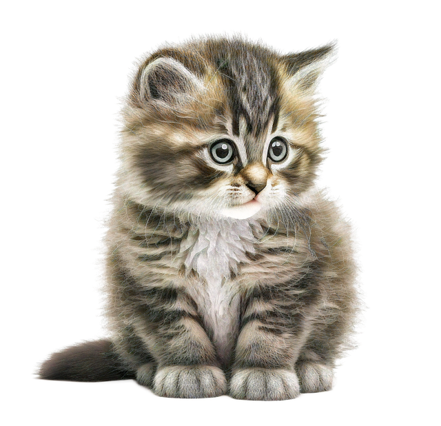
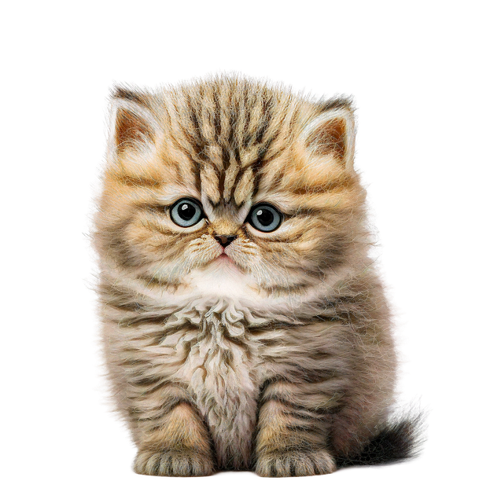
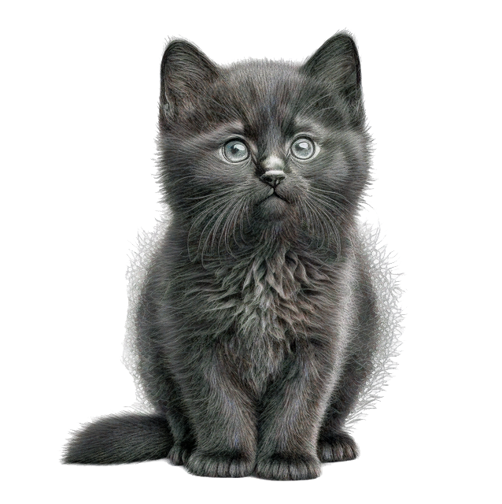
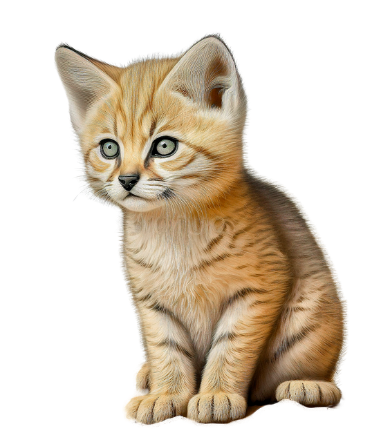
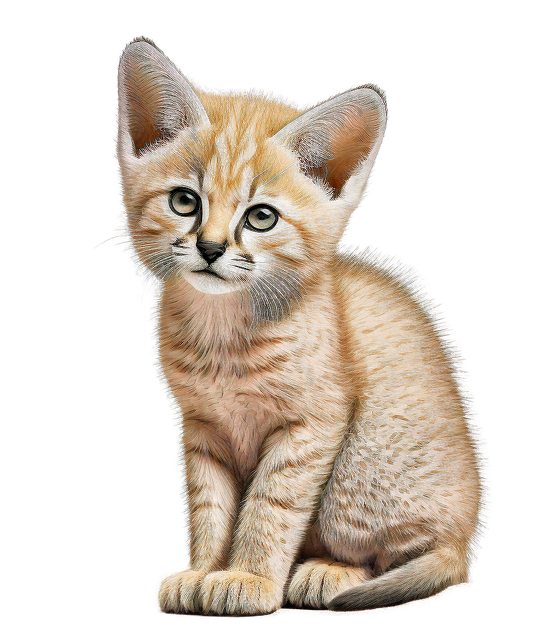
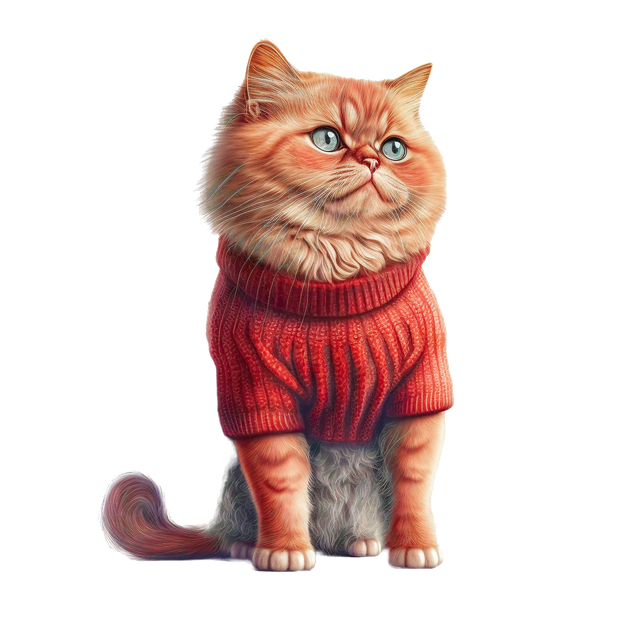
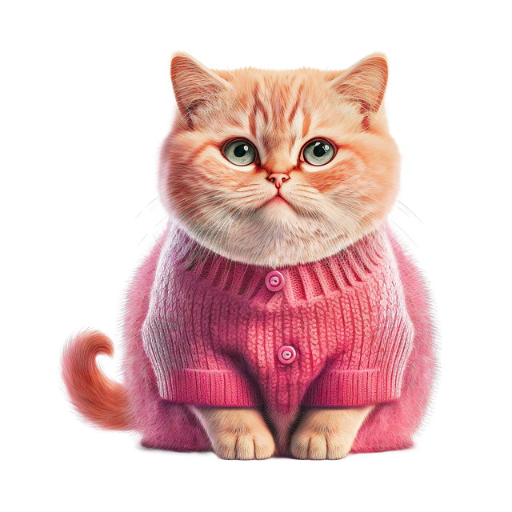
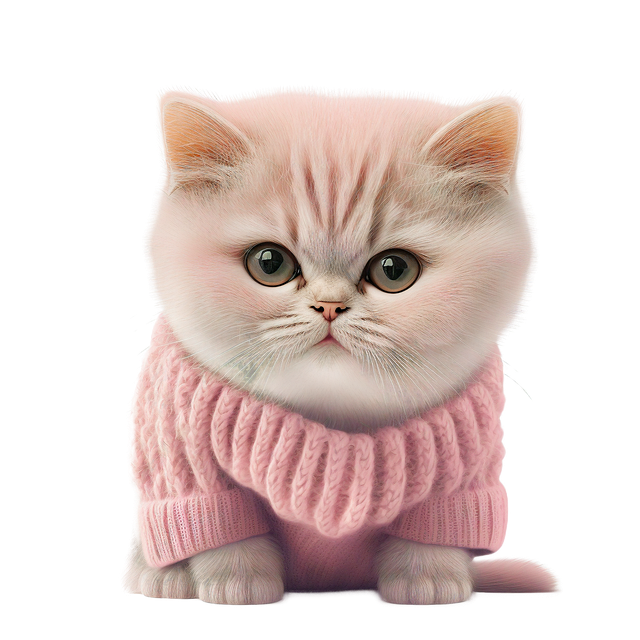
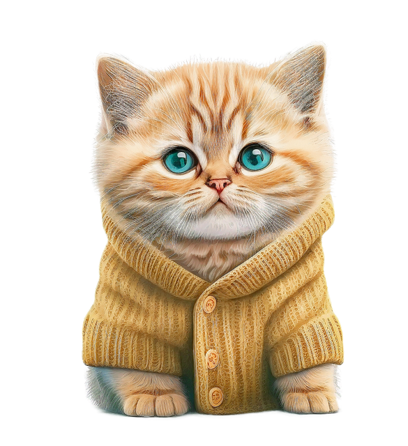

우리 집 고양이 소개
- 이름
- 룬(Rune)
- 품종과 털 색
- 페르시안 실버 친칠라
- 생년월일
- 2025년 8월 8일
- 나이
- 1살 (2026년 10월 기준)
- 특징
- 조용하고 잠이 많으며, 저를 졸졸 따라다닙니다.
룬은 우리 집에서 함께 생활하는 고양이입니다. 조용히 곁에 머무는 모습이 룬의 매력입니다.
우리 집의 막내인 룬과 함께하는 일상을 소개합니다.
룬은 우리 집에서 함께 생활하는 고양이입니다. 조용히 곁에 머무는 모습이 룬의 매력입니다.
실버 친칠라는 페르시안의 털 색과 무늬를 설명하는 명칭입니다. CFA에서는 페르시안 품종의 실버·골든 부문에 속하는 색상으로 분류합니다.
흰색 바탕의 털 끝에 검은색이 살짝 나타나 은빛으로 반짝이는 듯한 인상을 줍니다. 따라서 CFA의 분류에서 페르시안과 별개의 품종을 뜻하는 것은 아닙니다.
두 색상 모두 흰색 바탕에 어두운 털 끝이 나타납니다. 셰이디드 실버는 어두운 색이 더 넓게 나타나 실버 친칠라보다 짙게 보입니다.
페르시안(Persian Cat)은 풍성하고 긴 털, 둥근 머리, 짧은 코가 특징인 장모종 고양이입니다.
이름은 과거 이란을 가리키던 페르시아에서 유래했습니다. CFA의 소개에 따르면 1626년 이탈리아의 여행가 피에트로 델라 발레가 페르시아에서 장모 고양이를 데려온 기록이 있습니다.
유럽에서 번식과 선택 과정을 거치며 오늘날의 품종이 형성되었고, 1906년 CFA가 출범할 때 등록된 초기 품종 중 하나가 되었습니다.
긴 털이 엉키지 않도록 꾸준히 빗질해 주는 것이 중요합니다. 고양이가 편하게 쉴 공간을 마련하고, 싫어하는 행동을 억지로 시키지 않습니다.
품종 설명 참고: CFA 페르시안 소개 및 품종 표준
룬은 조용한 성격입니다. 큰 소리로 존재감을 드러내기보다는 가까이에서 함께 시간을 보내는 가족입니다.
룬은 잠이 많습니다. 편안히 쉬는 모습을 보면 저도 마음이 차분해집니다.
제가 움직이면 룬은 자다가도 일어나 졸졸 따라옵니다. 말없이 따라오는 모습이 저를 힐링시켜 줍니다.
예시 이미지의 고양이 사진들.








